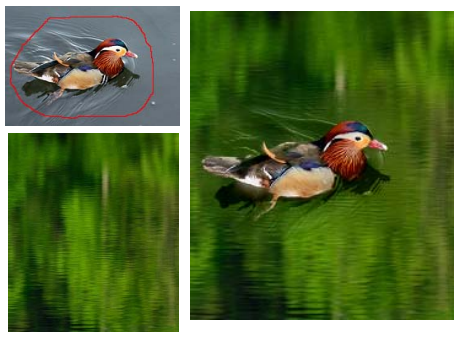

Haibin Huang
Office: 256 Computer Science Building
140 Governors Drive, Amherst, MA 01003
hbhuang at cs dot umass dot edu
I am available in the job market this year.
About me
I am currently a Ph.D student , working in the Computer Graphics Research Group with Prof. Evangelos Kalogerakis and Prof. Rui Wang. Before joining UMass Amherst, I obtained my bachelor's and master's degrees in Department of Mathematics , Zhejiang University
Research Interests:
Computer graphics, Machine learning
Work Experience

Research intern @ Computational Science Research Group
February 2017 ~ August 2017

Research intern @ Imagination Lab, Adobe Research
November 2015 ~ January 2016
May 2015 ~ August 2015
Publications

Learning to Group Discrete Graphical Patterns
SIGGRAPH ASIA 2017 (conditionally accepted).
ZhaoLiang Lun*, Changqing Zou*, Haibin Huang, Evangelos Kalogerakis, Pin Tan, Marie-Paule Cani, Hao Zhang
[ Project page ] [ Paper] [ Code ]

High Resolution Shape Completion Using Deep Neural Networks for Global Structure and Local Geometry Inference
IEEE International Conference on Computer Vision(ICCV) 2017.
Xiaoguang Han*, Zhen Li*, Haibin Huang, Evangelos Kalogerakis, Yizhou Yu
[ Project page ] [ Paper] [ Code ]

Learning Local Shape Descriptors with View-Based Convolutional Neural Networks
ACM Transactions on Graphics (TOG) (conditionally accepted), 2017.
Haibin Huang, Evangelos Kalogerakis, Siddhartha Chaudhuri, Duygu Ceylan, Vladimir Kim, Ersin Yumer
[ Project page ] [ Paper] [ Code ]

Synthesizing 3D Shapes via Modeling Multi-View Depth Maps and Silhouettes with Deep Generative Networks
IEEE Conference on Computer Vision and Pattern Recognition (CVPR) 2017
Amir Arsalan Soltani, Haibin Huang, Jiajun Wu, Tejas Kulkarni, Joshua Tenenbaum
[ Project page ] [ Paper] [ Code ]

Shape Synthesis from Sketches via Procedural Models and Convolutional Networks
IEEE Transactions on Visualization and Computer Graphics, Vol. 23, No. 8, 2017
Haibin Huang, Evangelos Kalogerakis, M. Ersin Yumer , Radomir Mech
[ Project page ] [ Paper] [ Code ] [ Slides ]

Analysis and synthesis of 3D shape families via deep-learned generative models of surfaces
Computer Graphics Forum, Vol. 34, No. 5, 2015 (SGP 2015)
Haibin Huang, Evangelos Kalogerakis, Benjamin Marlin
[ Project page ] [ Paper 7MB ] [ Code ] [ Slides Video ]

Analogy-Driven 3D Style Transfer
Computer Graphics Forum, Vol 33, Issue 2, 175--184 (Eurographics 2014)
Chongyang Ma, Haibin Huang, Alla Sheffer, Evangelos Kalogerakis, Rui Wang
[ Project page ] [ Paper 17MB ] [ Video 28MB Youtube ] [ Slides 8MB ]

Point Sampling with General Noise Spectrum
ACM Transactions on Graphics (TOG), 31(4) (SIGGRAPH 2012)
Yahan Zhou, Haibin Huang, Li-Yi Wei, Rui Wang
[ paper (27M) ] [ paper (11M) ] [ Supp ] [ source code]
